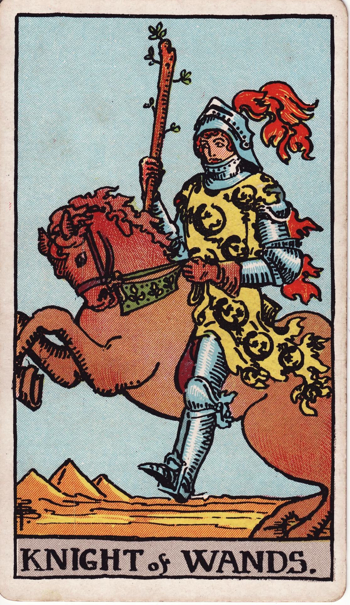
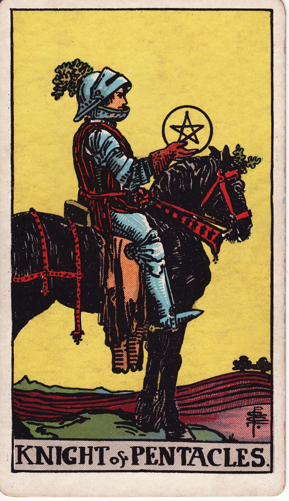

Lesson 06 · Tarot
The Court Cards as Four Postures
Sixteen cards in the deck show people rather than events. Rank and suit read them almost completely, and the real difficulty they bring — deciding who the person is — has an honest procedure.
By the end of this page you can read any of the sixteen court cards as a posture toward its suit's business, explain where the four ranks came from and why Waite's own book treats the Knight as older than the King, and handle the courts' genuine difficulty: deciding whether the card shows another person, a side of yourself, or the approach the situation is asking for.
After the forty number cards, each suit keeps four more — a Page, a Knight, a Queen and a King — and nothing happens in any of them — nobody trades, mourns, builds or flees. The sixteen figures simply stand, ride or sit enthroned, holding the suit's emblem and looking at it, past it, or straight out of the card. Waite gives the reading principle in a single sentence of the Pictorial Key: "the symbolism resides in their rank and in the suit to which they belong." The suit still names the kind of problem, exactly as before. Rank is the new dial, and it sets posture — how a person is standing toward the suit's business right now.
Four ranks from a card game
The ranks are the oldest part of this system and the least occult thing about it. An ordinary Italian pack of the fifteenth century carried three face cards per suit — king, knight and knave — and no queen at all; in Latin-suited packs the knight occupies her place to this day. The people who assembled the tarot pack added her, which is how its suits reached fourteen cards, and by the late fifteenth century the structure had settled into the one in your hands: king, queen, knight and page. Everything taught below was poured into that frame centuries later. The frame itself belongs to a game, and the four people in it are simply the household of a court, dealt out one per suit.
The three-rank court survives in Italian and Spanish packs, where the knight "replaces the queen, nonexistent in these packs" (Wikipedia, after David Parlett's Penguin Book of Card Games). For tarot's four-rank court, the historian-run Tarot Heritage: "by the late 15th century, tarot had settled into the structure we're familiar with today: twenty-two illustrated trump cards, and four suits with fourteen cards each, including four court cards: king, queen, knight and page" (Italian Tarot in the 15th Century).
The ladder of postures
Modern teaching reads the four ranks as four stages of engagement with the suit's business, and the Cups court shows the ladder as clearly as any suit in the deck:


The Page is new to the suit's business — studying it, playing with it, carrying its first news. Waite reads the Cups boy and his fish as imagination just beginning to stir, and his meanings run to "a studious youth; news, message; application, reflection." The Knight has mounted and gone after the same material: his Cups meanings are all approach and offer — "arrival… advances, proposition, invitation." The Queen has the suit's business fully internalised and keeps it; she lives inside feeling without drowning in it, and her card is the suit at its most complete. The King administers it from office. His throne floats on the open sea with a ship riding and a dolphin leaping behind him, and he holds his cup perfectly level on a surface that never stops moving — feeling governed rather than indulged, which is why Waite casts him as a "man of business, law, or divinity; responsible."
To see the ladder outside Cups, consider the money side of an ordinary household. The Page of Pentacles is someone reading up on mortgages for the first time; the Knight is the years of overpayments that follow, month after month at the same pace; the Queen is a household that quietly runs well because someone keeps it provisioned; the King is the person the whole family consults before signing anything.
No 1909 document prints this ladder. It is today's mainstream teaching — the most-used meanings site compresses it to "Pages conceive ideas, Knights act upon ideas, Queens nurture ideas and now Kings develop those ideas to an established and stable state" — and it descends from a family arrangement the Golden Dawn built into the ranks, which the next section digs out. It also fits Smith's sixteen pictures well, which is the real reason it survives.
The horse test
Smith gave the rank-and-suit rule a visible handle on the Knights. All four share one posture, mounted and in pursuit, so she made the horses carry the difference between the suits — and Waite points at the device himself, writing under the Knight of Wands that "the motion of the horse is a key to the character of its rider."



Lesson 5's rule carries over unchanged: rank sets the posture, suit names the business, and the picture then sets the temper — with the picture winning any disagreement. The Knight of Pentacles is the cleanest case in the deck, showing pursuit in the suit of material things on a horse that has stopped moving — a chase conducted at the pace of ploughing, which is exactly how Waite's meanings read — "utility, serviceableness, interest, responsibility, rectitude." The Queen of Swords shows the same tuning in a sadder key. Her posture is the Queen's keeping, her material is the suit of mind and conflict, and her face — which Waite says "suggests familiarity with sorrow" — pushes the card toward his printed "widowhood, mourning, separation." A queen tends whatever her suit brings her, and this suit brings losses.
Why Waite's book makes the Knight older than the King
One instruction in the Pictorial Key looks at first like a misprint. Explaining how to pick the card that stands for the person asked about — the Significator — Waite writes that a Knight should be chosen "if the subject of inquiry is a man of forty years old and upward," and a King "for any male who is under that age." The boyish rider is the elder and the enthroned monarch the younger man — an arrangement Waite never explains in the book, and one that makes no sense read on its own.
The explanation sits in Book T. The order's court has no Page and no seated King: its four ranks are Knight, Queen, Prince and Princess, arranged as a family — father, mother, son, daughter — and assigned fire, water, air and earth of their suit. The senior male is the mounted Knight, whose Cups title runs "Lord of the Waves and the Waters: King of the Hosts of the Sea," while the enthroned figure Waite printed as King corresponds to the order's Prince, a young man borne in a chariot. Waite kept the old game's names on the card faces and kept the order's family in his instructions, and the seam between the two systems is still visible in that age rule.
The age rule is printed in the Pictorial Key's divination instructions: Knight for "a man of forty years old and upward," King "for any male who is under that age," Queen "for a woman who is over forty years and a Page for any female of less age" (An Ancient Celtic Method of Divination, 1911).
The family scheme is Golden Dawn doctrine from Book T (full text): Knights as "a Force in which all the others are implied… swift and violent in action," Queens as "steady and unshaken," Princes and Princesses as the force carried onward and grounded. The same document also states the tradition's default use of the ranks: "the Knights and Queens almost invariably represent actual men and women connected with the subject in hand." Doctrine, asserted by the order around 1888 — not history.
Who is this person?
Waite's printed court meanings are mostly castings, from the same fortune-telling tradition lesson 5 traced through Mathers. In 1888 Mathers gives the King of Cups as "a fair Man, Goodness, Kindness, Liberality, Generosity," and Waite goes further, sorting all sixteen by colouring: Wands courts are "very fair people, with yellow or auburn hair, fair complexion and blue eyes," Cups people have "light brown or dull fair hair," Swords "dark brown hair and dull complexion," and Pentacles "very dark brown or black hair… sallow or swarthy complexions." Read literally, this would cast your acquaintances by hair colour, and Waite loosens it himself in the next breath: "you can be guided on occasion by the known temperament of a person; one who is exceedingly dark may be very energetic." Modern practice has dropped the complexion casting entirely and kept the temperament underneath it.
The difficulty that remains is not a Victorian leftover but the honest cost of this whole family of cards. A court card in a spread hands you a person-shaped meaning with no instruction on where to put it: it can be another person around the question, a side of yourself currently in charge, or the approach the situation is calling for. The deck does not decide among the three — no rank, suit or picture detail settles it — which is why beginners find the courts harder than any number card. The course's procedure is three questions, asked in order:
| Ask | Question | If yes |
|---|---|---|
| 1 | Does this posture in this suit instantly name a real person around the question? | Read it as that person. |
| 2 | If not — is it a stance I am currently taking in the matter? | Read it as that side of yourself. |
| 3 | If neither — what would it mean to meet this question in this posture? | Read it as the approach being asked for. |
The choice stays with you at every step, and the honest move at the table is to make it out loud: "I'm reading this as your manager, because a Queen of Swords is exactly a clear-eyed woman who has been through it — tell me if that lands." That sentence admits the choice and points at the evidence, which is exactly what justified reading sounds like.
Do this now · with your deck
Fifteen minutes, the sixteen court cards only.
- Lay out the court. Pull all sixteen and build the grid: suits in columns, ranks in rows from Page at the bottom to King at the top. This is the deck's entire cast of people seen at once — forty events behind them, twenty-two big pictures still to come.
- Run the horse test. Take the Knights' row and say aloud what each horse is doing, then what that pace does to a pursuit. Check yourself against the plate above only afterwards.
- Thrones against thrones. For each suit, hold the Queen next to the King and say one sentence about what she keeps and one about what he runs. Use the pictures — her sea's edge against his throne on the waves, her sorrow-tested face against his judge's seat.
- Cast yourself. Name the court card that is you this week at work, and the one that is you at home, posture and suit both justified aloud. Getting two different cards is normal; you are casting a posture, not a portrait.
- Again tomorrow. Shuffle the sixteen, draw three, and give one sentence each — "someone who is learning / chasing / keeping / running the suit's business" — then let the picture adjust the temper. The overnight gap is what stores it.
Check yourself
One attempt per question, no scrolling back up.
In this course's method, the rank of a court card tells you…
- How the person is standing toward the suit's business
- Which of the four kinds of problem is in play
- How secure the outcome of the matter will be
Rank is posture — learning, pursuing, keeping or running the suit's material. The kind of problem still comes from the suit (lesson 3), and how secure things are was the numbers' job (lesson 4). Waite's own sentence: "the symbolism resides in their rank and in the suit to which they belong."
The court rank that tarot's makers added to the ordinary Italian pack was…
- The Queen — regular packs ran king, knight, knave
- The Knight — a rank invented for the trionfi game
- The Page — a rank promoted from the servants
Latin-suited packs still run king–knight–knave, with the knight sitting where the queen would be. Tarot added her, taking each suit to fourteen cards; the page is simply the old knave under a politer name.
Waite's book assigns the Knight to a man over forty and the King to a man under forty because…
- His instructions follow Book T's court, where the mounted figure is the senior card
- He considered horsemanship the true mark of maturity in a gentleman
- The printer transposed the two entries and no edition ever corrected it
Book T's ranks are Knight, Queen, Prince, Princess — a family of father, mother, son and daughter. The RWS King corresponds to the order's young Prince in his chariot, so the deck wears the game's names while the instructions keep the order's seniority.
A court card lands in your spread. The course's procedure asks first…
- Whether this posture and suit instantly name a real person around the question
- Whether the card fell upright or reversed when the spread was dealt
- Whether the cards on either side of it are trumps or number cards
Person first, then a side of yourself, then the approach the situation demands — and whichever you pick, you say the choice aloud. The deck never settles it for you, and pretending otherwise is the dishonest version of court-card reading.
Back to lesson 4 for a moment, blind: a nine and a ten of the same suit differ in that…
- The nine leaves one figure still able to act; the ten has landed in a wider world
- The nine is always the hardship card and the ten always the card of relief
- The nine belongs to the decans while the ten stands outside the formula
Book T's own contrast: the nine is "executive power" on a firm basis — one person, matters still in hand — while the ten is "the matter thoroughly and definitely determined," the result arrived in a world of other people. The picture test from lesson 4: count the figures and look for the town.
Read this before the next lesson
Read Waite's sixteen court entries in the Pictorial Key — they are a few sentences each. Start at the King of Cups and follow the Next links, or use the Internet Archive copy with the original plates. Watch two things as you go: how often a meaning is a person-casting rather than an event, and how often the picture already told you the temper before the text confirmed it.
I am your teacher here — ask me things. The courts reward interrogation more than any cards so far. Some good ones to throw at me:
“Why does the Queen of Swords get widowhood while the King of Swords gets authority — how much of that is just Victorian?” · “Show me Book T's full family for one suit, titles and all.” · “What do I do with two court cards side by side in a spread?” · “Which court card am I when I keep planning instead of starting?” · “Does anyone still use the hair-colour castings?”